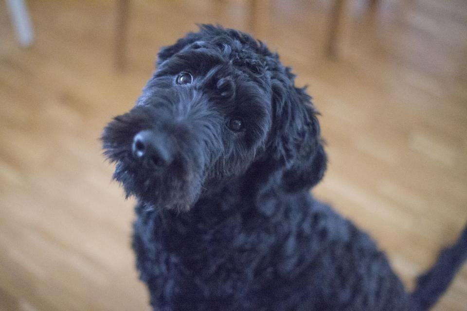
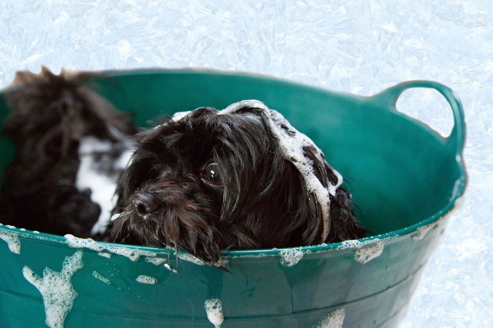
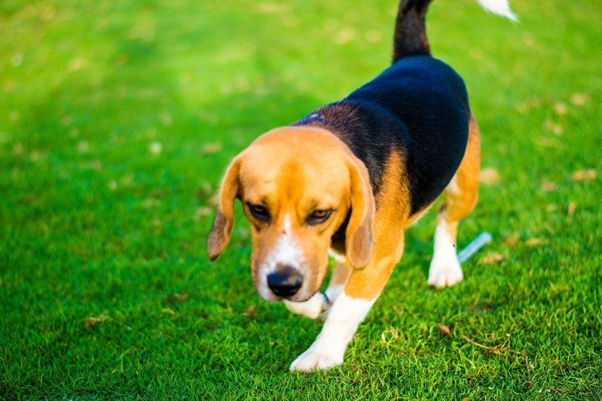
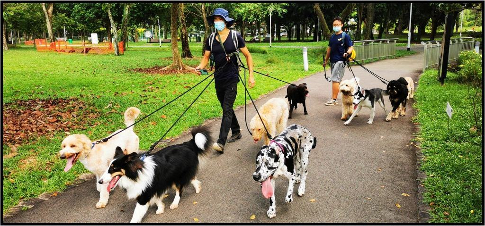
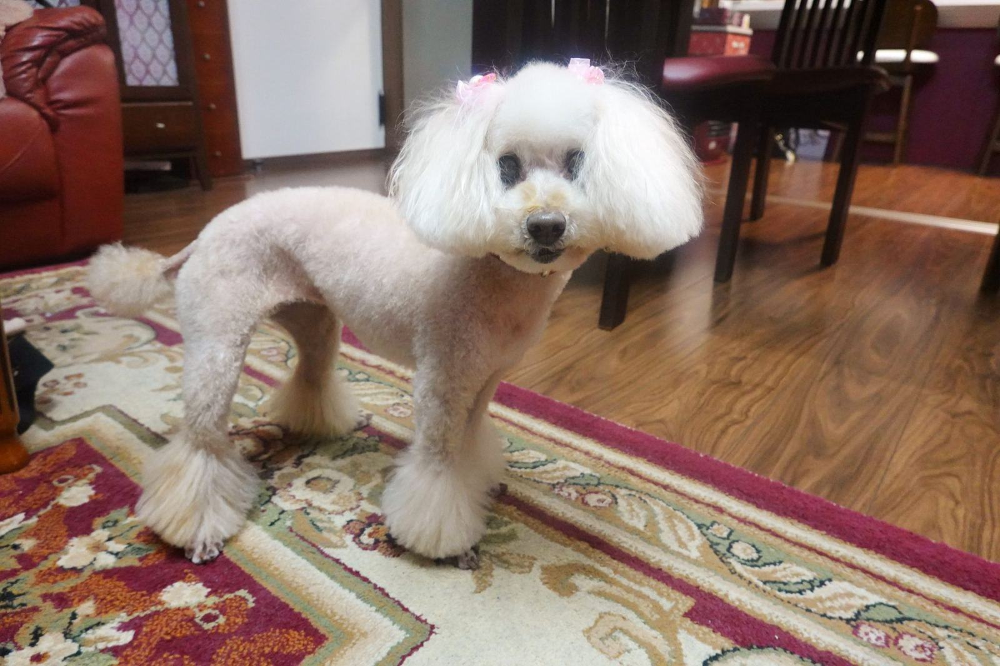
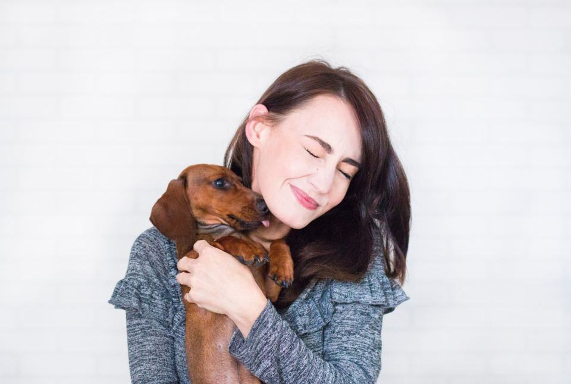
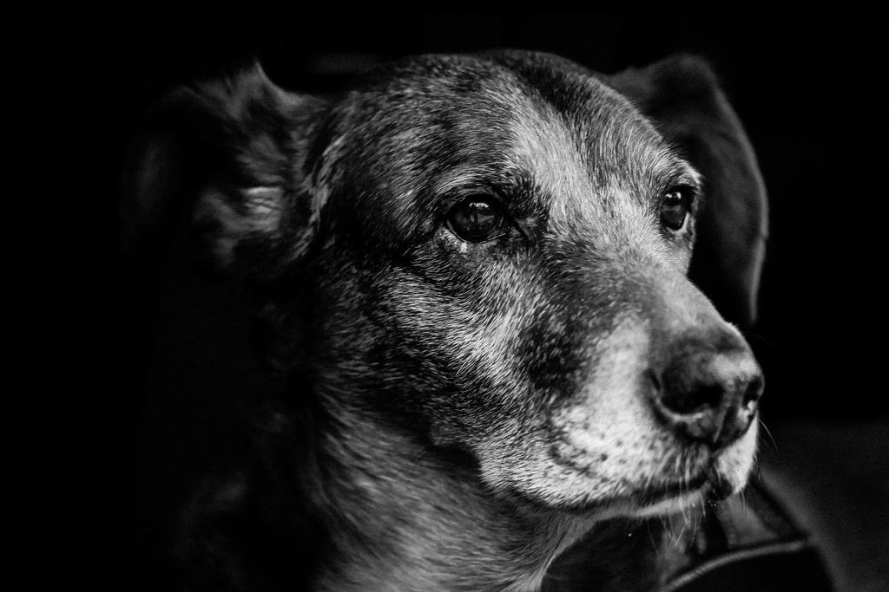
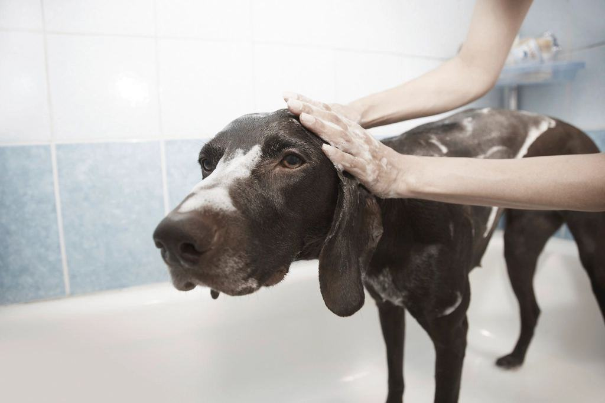
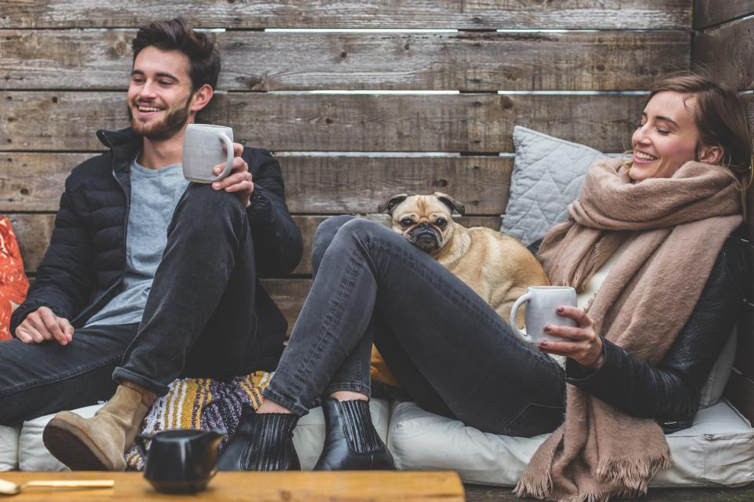

Behandlingar
Salongen ligger i en före detta tandläkarmottagning på Frösön, i markplan och utan trappsteg. Här finns ett sänkbart bord med ortopedisk madrass, en uppvärmd pool på 3 × 4 meter för rörelseträning och ett vilrum med golvvärme. Vi tar högst fyra hundar per dag.
Hur mycket orkar din hund idag?

Trim för äldre hundar
Hunden ligger ned under större delen av klippningen och vi vänder den försiktigt. Pass om tjugo minuter följs av vila i vilrummet.
En klippning tar ofta en hel förmiddag, men hunden står bara några minuter i taget.

Rörelse i varm pool
Simning avlastar lederna och bygger muskler som håller hunden uppe. Vi arbetar efter ett program som hundens veterinär eller fysioterapeut har godkänt.
Flytväst och ramp ingår, och vattnet håller 30 grader.

Hundar med nedsatta sinnen
Blinda och döva hundar blir lätt skrämda av beröring de inte förväntar sig. Vi använder vibrationssignaler och samma ordning på allt, varje gång.
Ägaren får gärna vara med under hela besöket.

Hemma de sista månaderna
När hunden är för sjuk eller svag för att åka bil kommer vi hem med bord, handdusch och fön. Många väljer det de sista månaderna.
Hembesök görs inom fem mil från Östersund.
Ett lugnt besök i fyra delar
- 1

Hälsosamtal
Vi går igenom diagnoser, mediciner och vad hunden klarar av – gärna med journalen framför oss.
- 2

Vila före start
Hunden får komma in, dricka och lägga sig i vilrummet innan vi börjar.
- 3

Tjugo minuter i taget
Tjugo minuter i taget med vila emellan. Vi avbryter om hunden visar smärta.
- 4

Anteckning hem
Du får en skriftlig rapport om hud, klor, knölar eller sår som vi har sett.